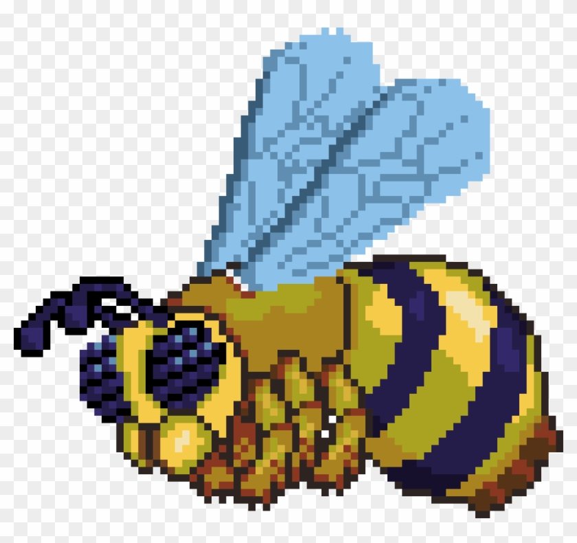
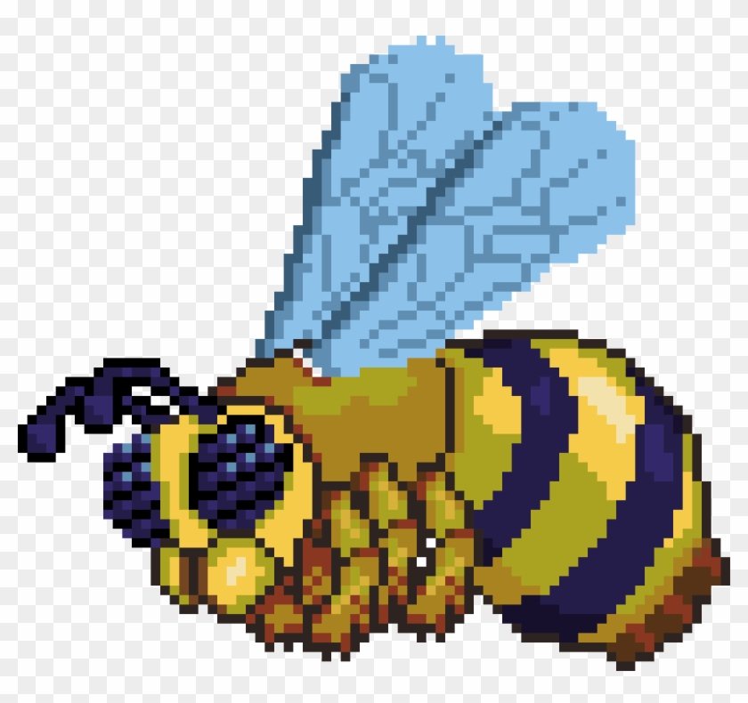

kan bli 4 forkjellige klasser til å være warrior,mage,ranger og summonor
hver av disse klassene har mange forkjellige våpner for sin klasse. warrior bruker sverd(meele weapons, mace, whip, yoyo) mages bruker staver eller magi bøker(magic weapons) rangers bruker buer eller pistoler (ranged weapons) summoners bruker items som inkaller et dyr som beskytter deg(summoner item)
det er 2 modes i terraria det er pre hardmode og den andre er hardmode
alle verdener starter med pre hardmode
du må drepe alle pre hardmode bosser for å begynne hardmode (må drepe wall of flesh sist)
hardmode
gratulerer du er i hardmode, mobs har blitt sterkere og tøffere
det er 10 mer bosser til å drepe
etter du har drepet "mech bosseses" vill jungelen i verdenen spawne plantera bulbs
etter du har ødelagt en plantera bulb, vill plantera spawne
da kan du drepe alle bossene som mangler
den siste bossen "moonlord" spawner når alle fire pillars har blitt ødelagt
det er også mini/raids/event og pillars
Dark mage (riktig bilde ikke funnet)
til slutt så kan du sikkert lage zenith hvis du har alle sverdene for det
hvis noe her er uklart kan du bruke den offisiele wiki pagen som forklarer alt


 
